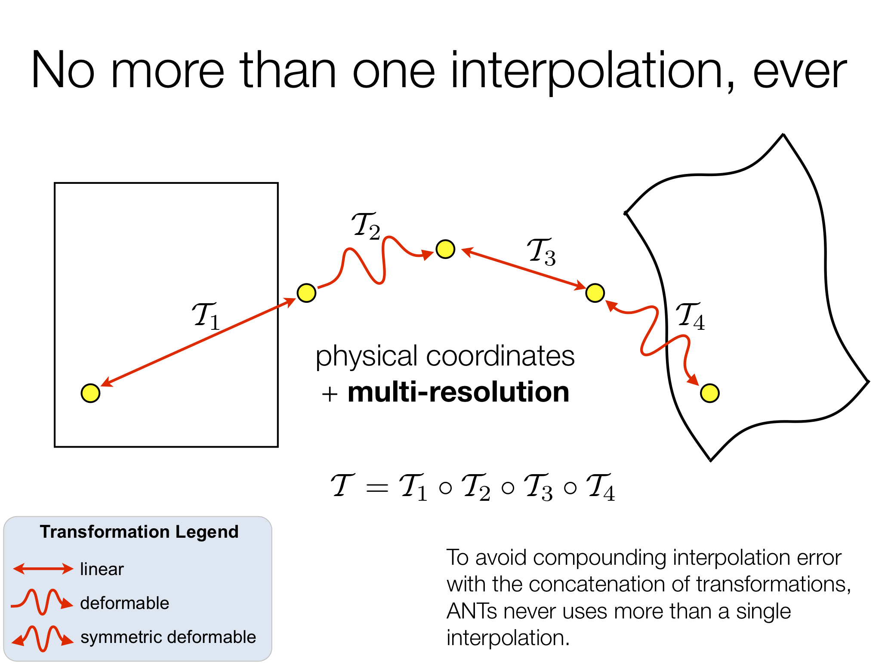

Getting started with ANTsR¶
Brief Introduction to using ANTs in R¶
There is a general tutorial here ANTsR-Tutorial .
Once installation is successful, the ANTsR package can be used in R as follows:
Load the package
> library( ANTsR )
List the available functions in the namespace ANTsR
> ANTsR::<double-tab>
Use any function in the core ANTS namespace by providing arguments almost exactly as in the command-line version.
For example, call the antsImageRead routine and some standard ANTs functions.
tfn <- getANTsRData("r16") # download example data
antsimage <- antsImageRead(tfn, 2)
imgn3 <- antsImageClone(antsimage)
N3BiasFieldCorrection(list(antsimage@dimension, antsimage, imgn3, "4"))
Installation Method: OSX and LINUX variants¶
We created an install script ( ANTsR-Install-Script ) that uses Homebrew or apt-get (on LINUX)
to install CMake, git, R, wget ( on osx ) and ANTsR package dependencies.
NOTE: If you see errors like “Undefined symbols for architecture x86_64” , edit the script to use
$ R –arch=x86_64 CMD INSTALL ANTsR
{kind=link}